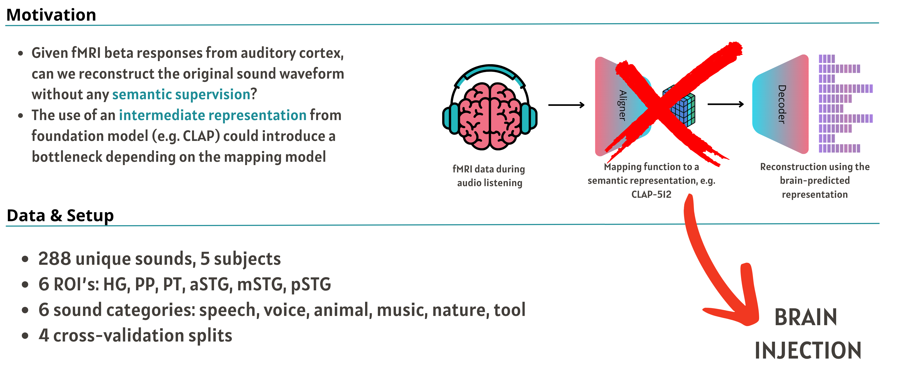
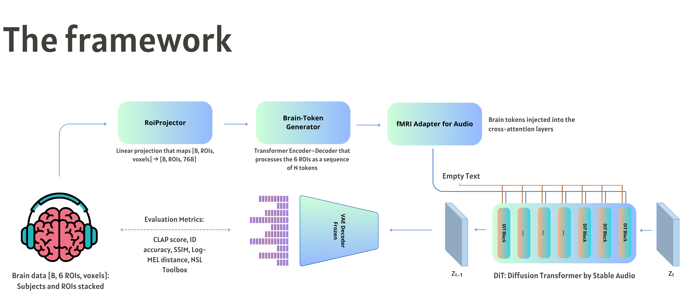

Quantitative Results
Check out the confusion matrices and ablation studies below.

Reconstructing Sound from Brain Activity Without Semantic Supervision
This work introduces a generative framework for reconstructing sound waveforms directly from fMRI beta responses in the auditory cortex. By bypassing intermediate semantic representations (e.g., CLAP), we prevent bottlenecks and allow for purely acoustic generalization. We leverage a latent diffusion model (Stable Audio) and inject brain tokens via cross-attention mechanisms without architectural surgery.
The use of an intermediate representation from foundation models (e.g., CLAP) could introduce a bottleneck depending on the mapping model. This work explores a direct, generative approach to fMRI-to-Audio reconstruction.

Our approach uses a diffusion model (Stable Audio) with brain tokens injected via cross-attention.

Compare the original target audio (ground truth) with the audio reconstructed from fMRI data.
Check out the confusion matrices and ablation studies below.